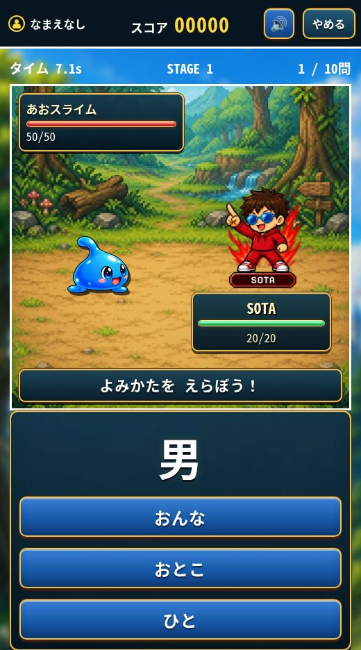

こくごかんじのよみ
漢字クエスト
かんじを よんで、ぼうけんへ。
よみかたを えらんで、モンスターと バトル！
SOTAたちと いっしょに、かんじの よみを れんしゅうしよう。
- しょうがく1〜6ねんせい
- 3たく・10もん
- むりょう

どんなことを まなべる？
がくねんに あわせて えらべる
1〜6ねんせいの ステージから、れんしゅうしたい がくねんを えらぼう。
よみかたを 3つから えらぶ
かんじを みて、よみかたを タップ。せいかいすると、モンスターに こうげきできるよ。
あそびかた
がくねんを えらぶ
「はじめる」を おして、1〜6ねんせいの ステージを えらぼう。
キャラクターを えらぶ
SOTA・CASTOR・KAIRI・KAPPAから、すきな キャラクターを えらぼう。
10もんに チャレンジ
3つの よみかたから こたえを えらんで、バトルしよう。
ゲームの がめん

よみかたを えらんで バトル！
かんじを よんで、こたえを タップ。せいかいすると モンスターに こうげきできるよ。
10もんに チャレンジして、じぶんの スコアを のばそう。
公開版の実際の画面（2026年10月6日撮影）。更新により表示が変わることがあります。
保護者の方へ：学習内容と対象
漢字クエストは、小学校1〜6年生の漢字の読みを練習するゲームです。学年ごとに36問を収録し、その中から1回のプレイで10問を出題します。短い問題セットを繰り返し遊べます。
| 学べる項目 | 国語：漢字の読み。漢字を見て、正しい読み方を3つの選択肢から選びます。 |
|---|---|
| 対象学年 | 小学1〜6年生。練習したい学年を選択できます。 |
| 問題の範囲 | 各学年36問・合計216問。各学年で習うすべての漢字や、すべての読み方を網羅する教材ではありません。 |
| 遊びの仕組み | 正解でモンスターに攻撃。キャラクターを選び、スコアやコンボを目指して遊べます。 |
| 利用環境 | スマートフォン・タブレット・パソコンのブラウザ。無料・インストール不要。 |
よくある しつもん
むりょうで あそべる？
無料で遊べます。ゲームのページを開けば、インストールせずに始められます。
かんじを かく れんしゅうも できる？
このゲームは漢字の「読み」を3択で答えるゲームです。書き取りや筆順の練習は含まれません。
ランキングには なにが のる？
ニックネームを設定すると、スコアなどが月間ランキングに表示されます。本名・学校名・住所など、個人が分かる情報は入力しないでください。
スマホでも あそべる？
スマートフォン・タブレット・パソコンのブラウザで遊べます。問題の選択肢はタップまたはクリックで選べます。
個人情報やアクセス解析については、プライバシー方針をご確認ください。
漢字クエストで あそんでみよう。
サボテン工場の しょうかいも みる →